Tout pour bien démarrer et maîtriser la survie 2.0 sur Tryzaria.
Bien démarrer
Bienvenue sur Tryzaria Survival ! Voici les bases pour lancer ton aventure.
Tryzaria, c'est la survie repensée : des boss faits main, des mondes entièrement custom, une économie vivante, des grades, des caisses et bien plus. Pas besoin d'être un pro — prends ton temps, explore, construis ta base, rejoins une communauté accueillante et grimpe les rangs à ton rythme. Ce guide regroupe tout ce qu'il faut savoir pour ne rien rater.
Se connecter
Minecraft Java 1.21.4 ou toute version plus récente.
Comptes officiels (premium) et Cracked acceptés.
IP du serveur :91.197.6.177:25325
🎮 Le support Bedrock (mobile / console) est prévu — bientôt parmi nous !
Tes premiers pas
Tape /spawn pour rejoindre la place centrale.
Pose ton point de retour avec /sethome, reviens-y avec /home.
Protège ta base avec un claim.
Vote chaque jour et ouvre tes caisses pour des récompenses.
Commandes utiles
/spawn — revenir à la place centrale.
/sethome, /home, /delhome — gérer tes points de retour.
/tpa <joueur> — demander à te téléporter chez quelqu'un.
/msg <joueur> — envoyer un message privé.
/balance, /pay — consulter ton argent et payer un joueur.
/warp Crates, /arena — accéder aux caisses et aux arènes de boss.
💬 Perdu ? Demande sur le Discord, la communauté et le staff sont là pour aider.
Boss custom
Cinq créatures faites main, chacune avec ses mécaniques, ses attaques et son loot légendaire. Elles apparaissent dans les arènes — viens préparé.
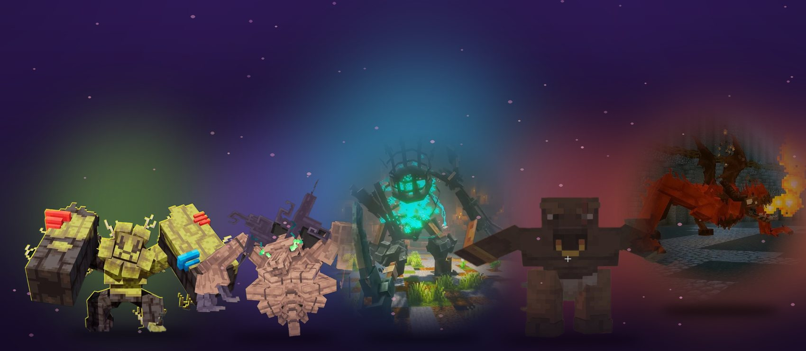
Oublie les zombies qui traînent : ici, chaque boss a son thème, ses phases de combat et ses attaques signature. Certains invoquent des renforts, d'autres frappent en zone ou se soignent — apprends leurs patterns pour ne pas finir au cimetière. Le butin est à la hauteur du défi : équipements rares, ressources précieuses et clés de caisses parmi les plus convoitées du serveur.
Le bestiaire
Forêt
Colosse Sylvestre
Un titan de bois et de pierre, gardien des profondeurs de la forêt.
Ancien
Gardien Ancestral
Une entité oubliée aux pouvoirs anciens, réveillée par les imprudents.
Abysses
Le Veilleur
Tapi dans les ténèbres, il te traque au moindre bruit. Le combat le plus intense.
Brute
Minotaure
Une force brutale qui charge sans relâche dans son labyrinthe.
Feu
Drake Ardent
Un dragon cracheur de flammes terré au fond des donjons.
⚔️ Prépare ton stuff et viens en groupe — certains boss ne se battent pas en solo.
Récompenses
Vaincre un boss garantit un butin, mais les pièces les plus rares (skins d'outils, équipements signature, grosses clés) tombent selon la chance — réessaie pour compléter ta collection. Plus le boss est redoutable, meilleur est le loot. Affronte-les régulièrement : ils réapparaissent dans les arènes après un temps de repos.
Mondes
Overworld, Nether et End entièrement retravaillés — plus un monde Arène dédié aux boss.
Chaque dimension a sa propre ambiance et ses défis : biomes revisités, structures custom, donjons et coins secrets à découvrir. Que tu sois explorateur, bâtisseur ou chasseur de boss, il y a toujours une nouvelle zone à conquérir. Pense à poser des homes dans tes spots préférés pour y revenir vite.
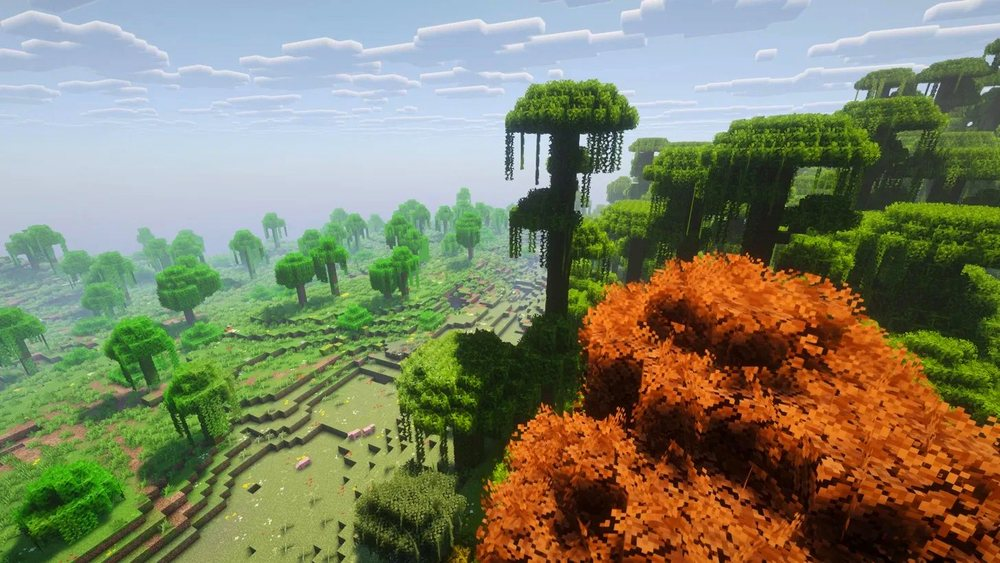
Overworld
Un Overworld vivant
Des biomes retravaillés, une flore et une faune custom, des paysages à couper le souffle.
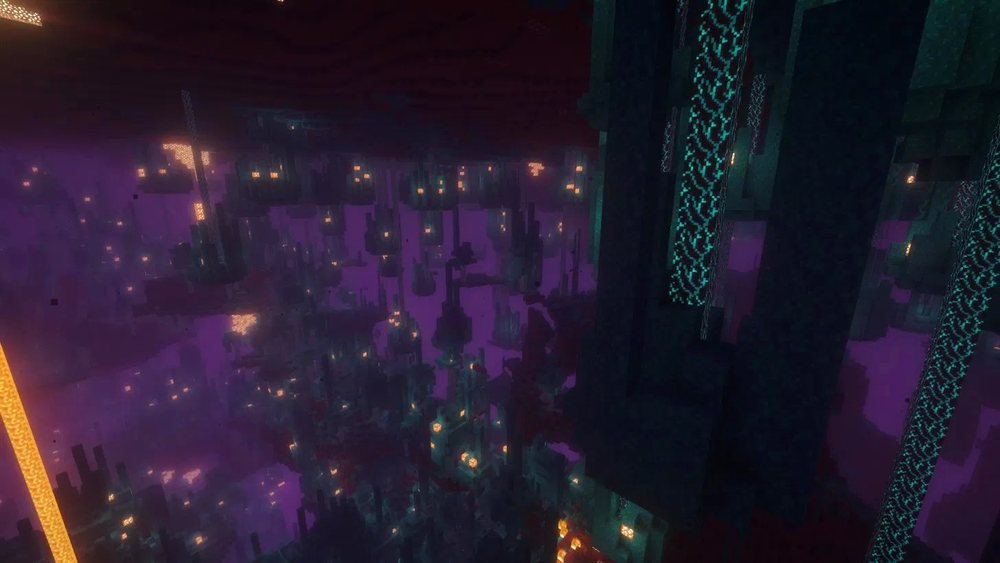
Nether
Un Nether sous tension
Des cavernes hostiles aux teintes pourpres, entre lave, créatures et trésors.
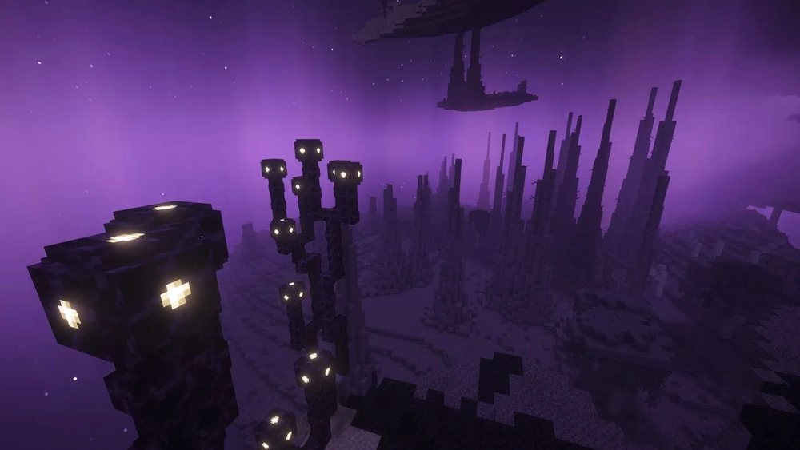
End
Un End mystérieux
Des îles flottantes, des cités oubliées et des secrets pour les plus braves.
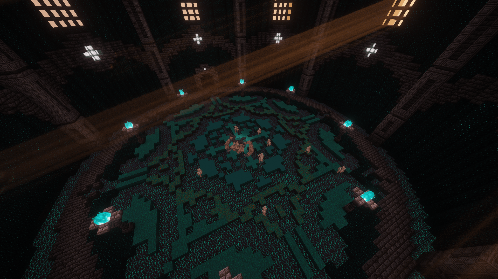
Arène
Le monde Arène
Six arènes différentes où les boss apparaissent aléatoirement. Rejoins-les avec la commande /arena.
Caisses
Six caisses, de la plus commune à la plus rare et puissante. Récupère les clés en votant, en boutique ou lors d'events.
🧭 Accès : commande /warp Crates, ou le portail du Nether sur le spawn.
Chaque caisse possède sa propre table de loot : plus le palier est élevé, plus les récompenses sont rares et puissantes — cosmétiques, équipements, ressources, argent en jeu, et même la table Toolsmith dans la Légendaire. Approche-toi d'une caisse avec la bonne clé en inventaire, fais un clic droit, et tente ta chance. Les clés ne se périment pas : tu peux en accumuler avant de tout ouvrir d'un coup pour le plaisir.
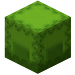
VotePalier 1
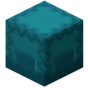
CommunePalier 2
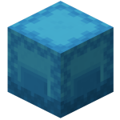
RarePalier 3
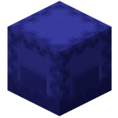
ÉpiquePalier 4
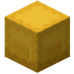
LégendairePalier 5
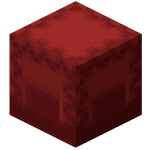
BossPalier 6
Toolsmith — personnalise tes outils
Tryzaria ajoute une table spéciale qui change l'apparence (la texture) de tes outils, sans toucher à leurs statistiques.
Cette table s'obtient dans la caisse Légendaire.
L'idée : garder la puissance de ton stuff tout en lui donnant un style unique. Une pioche en netherite peut ressembler à tout autre chose, sans perdre ses enchantements ni sa durabilité. C'est purement cosmétique — parfait pour te démarquer en jeu.
Comment l'utiliser
Récupère la table Toolsmith dans une caisse Légendaire, puis pose-la.
Fais un clic droit sur la table pour ouvrir l'interface.
Place ton outil, choisis l'apparence voulue, valide — c'est appliqué !
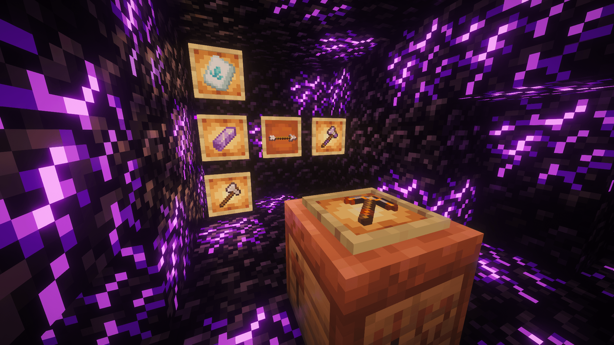
La table Toolsmith en jeu.
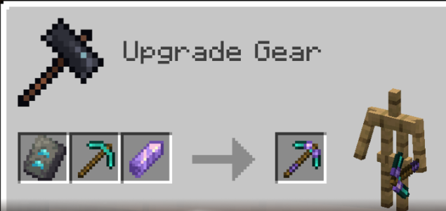
Comment l'utiliser, étape par étape.
Votes
Vote pour Tryzaria et gagne 1 clé de Vote par vote. Trois sites = jusqu'à 3 clés par jour.
Voter, c'est gratuit et ça prend 30 secondes : tu entres ton pseudo sur le site, tu valides, et ta clé arrive en jeu. C'est le meilleur moyen de soutenir le serveur — chaque vote le fait grimper dans les classements et attire de nouveaux joueurs. Pense à voter tous les jours sur les 3 sites pour maximiser tes clés.
ServeursMinecraft.orgLe top des serveurs FR.🗳️ Voter
Serveur-Minecraft-Vote.frPage de vote dédiée à Tryzaria.🗳️ Voter
Serveur-Minecraft.comEncore un vote, encore de la visibilité.🗳️ Voter
🗳️ Les clés de Vote ouvrent la caisse Vote.
Règles & FAQ
Tryzaria se veut accueillant pour tout le monde. Ces quelques règles garantissent une bonne ambiance pour tous — les enfreindre peut mener à un avertissement, un mute ou un ban selon la gravité. En jouant sur le serveur, tu acceptes de les respecter.
Règles du serveur
Sois respectueux et garde le chat convenable (family friendly).
Aucun harcèlement ni attaque verbale envers un autre joueur.
Pas de spam, de pub, de MAJUSCULES abusives ni de messages répétés.
Le hack ou toute forme de triche entraîne un ban.
Exploiter un bug de duplication est interdit — tu DOIS prévenir un admin.
Les lag machines (destinées à créer du lag) sont supprimées et entraînent un ban définitif.
Ne mendie ni grade ni argent auprès des autres joueurs.
😄 Bon jeu sur Tryzaria !
FAQ
Le serveur est-il accessible en Cracked ?
Oui — Java officiel et Cracked sont acceptés, même IP : 91.197.6.177:25325.